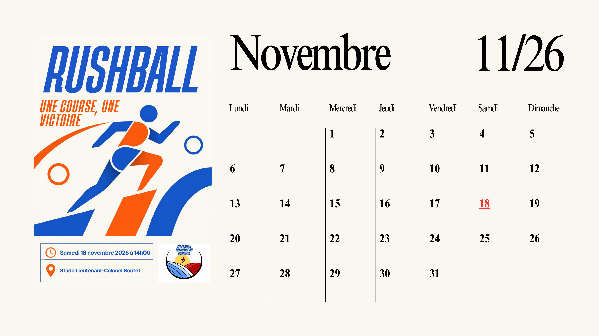

Vidéo


Interview des fans:
Comment as-tu découvert le Rushball ?
Par hasard, un ami m’a emmenée à un match. Je n’y connaissais rien, mais l’ambiance m’a happée dès les premières minutes.
Qu’est-ce qui te plaît le plus dans ce sport ?
La rapidité et l’intensité du jeu. Chaque match est un véritable spectacle, et j’adore l’adrénaline que ça procure.
As-tu un joueur ou une joueuse préféré(e) ?
Oui, j’admire beaucoup le capitaine de l’équipe nationale. Sa technique et son leadership sont impressionnants.